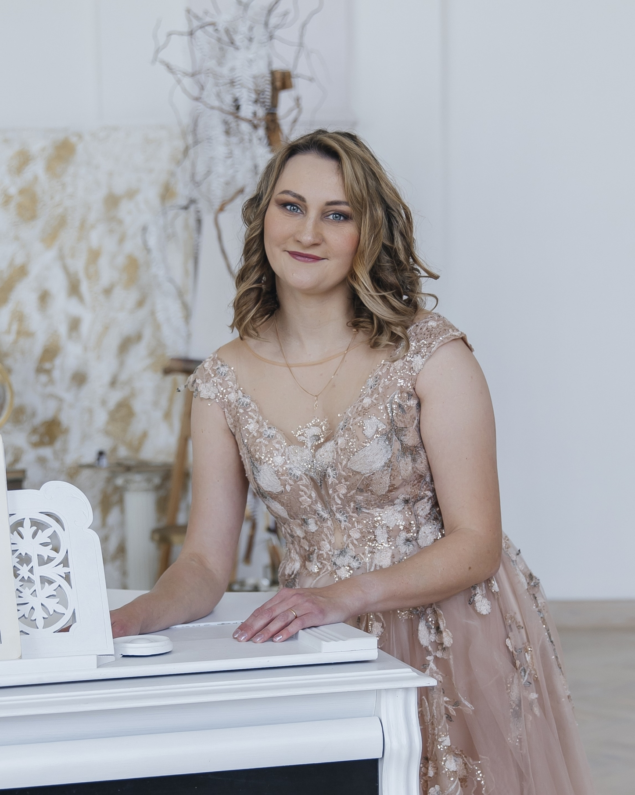

O nás

Členky klavírního dua Four hands započaly spolupráci na podzim roku 2021 při přípravě adventního koncertu. Jejich první společnou skladbou byla svita z baletu Louskáček a následně přišla myšlenka program rozšířit o další baletní hudbu tak, aby koncerty s názvem Pohádkové balety byly tématické. Společně absolvovaly již řadu koncertů a svůj repertoár mimo čtyřručních standartů rády rozšiřují o další hudební žánry.
V současné době pořádají koncerty zaměřené především na díla předních českých mistrů jako například Dvořákovy Slovanské tance, celý Smetanův cyklus Má vlast, dále pak jazzové skladby soudobých českých autorů, úpravy orchestrálních a symfonických děl a filmovou hudbu. Pořádají také výchovné koncerty pro školy. Kromě čtyřruční hry zařazují do repertoáru i skladby pro dva klavíry. V rámci koncertů a projektů spolupracují mj. s uměleckou agenturou Globarts, skladatelem Zdeňkem Králem.
Naše vystoupení
Nejbližší akce:
21/3/2025 - Rájec - Jestřebí - Kulturní centrum, v 19h. (Spolupráce s uměleckou agenturou Globart)
2/4/2025 - Velké Meziříčí - Jupiter Club, v 19h. (Spolupráce s uměleckou agenturou Globart)
26/7/2025 - Vysoká u Příbramě - Památník A. Dvořáka - Komponovaný pořad "Tanec v barvě národní".
14/9/2025 - Tábor - Divadlo Oskara Nedbala - B. Smetana - Má Vlast, v 19h
23/9/2025 - Frenštát pod Radhoštěm - Dům Kultury, v 19h (Spolupráce s uměleckou agenturou GLOBART)
17/2/2026 - Kolín
Proběhlé akce:
18/1/2025 - Velké Popovice, Knihovna, v 18h.
23/1/2025 - Ostrov, Stará radnice, v 17 h.
4/2/2025 - Přerov - Městský dům, v 19 h. (Spolupráce s uměleckou agenturou Globart)
2/3/2025 - Muzeum Bedřicha Smetany v Praze, v 18h.
3/12/2024 - Adventní koncert Libeňský zámeček, v 19h.
14/11/2024 - Výchovné koncerty Knihovna Velké Popovice.
11/10/2024 - Říčany Babice - Koncert filmové hudby, v 19h. v Kulturním domě.
8/6/2024 - Liberec - Palác Liebieg, koncert filmové hudby na letní scéně, v 14h.
16/5/2024 - Praha Chodovská tvrz, v 19h.
4/4/2024 - Praha, ZUŠ Jižní město.
2/3/2024 - Památník A. Dvořáka - Má Vlast - koncert k 200letému výročí narození B. Smetany
7/3/2024 - Brno Bystrc, v 19h. (Spolupráce s uměleckou agenturou GLOBART)
22/2/2024 - Třebíč, v 19h. (Spolupráce s uměleckou agenturou GLOBART)
15/2/2024 - Vyškov, v 19h. (Spolupráce s uměleckou agenturou GLOBART)
20/1/2024 - Knihovna V. Popovice, v 19h. Novoroční koncert: Slavné klasické a filmové melodie
7/12/2023 - Výchovné koncerty knihovna V. Popovice
8/11/2023 - Říčany Babice - KD
1/11/2023 - Kostel sv. Vavřince pod Petřínem - B. Smetana “Má vlast”.
28/4/2023 - Chodovská tvrz “Tance v Proměnách”.
27/4/2023 - Vzorná knihovna Velké Popovice - Výchovné koncerty “Pohádkové balety”.
7/1/2023 - “Tance v hudbě s projekci” Atrium na Žižkově.
12/2022 - Vzorná lidová knihovna Velké Popovice.
12/2022 - Výchovné koncerty - P. I. Čajkovskij -Louskáček.
6/2022 - Ostravská univerzita/fakulta umění - Katedra klávesových nástrojů “S tancem kolem světa“.
5/2022 - Atrium na Žižkově.
3/2022 - ZUŠ Jižní město.
Kateřina
Konopová

Kateřina Konopová (roz. Turková) je rodačka z Opavy, kde navštěvovala místní ZUŠ pod vedením Mgr. Oriany Šenfeldové. Dále absolvovala Janáčkovu konzervatoř v Ostravě a Institut pro umělecká studia Ostravské univerzity pod vedením profesorky Marty Toaderové. Poté úspěšně ukončila doktorandské studium na VŠMU v Bratislavě pod vedením profesora Stanislava Zamborského, kde se podrobněji zabývala tvorbou Bohuslava Martinů. Je laureátkou několika mezinárodních soutěží - 1. cenu v sólové hře získala na soutěži Art-duo Competition v Praze (2018), dále 2. cenu v sólové hře na International Master Competition ve Varšavě (2019 a 2022) a 1. cenu v Art-duo Competition v Barceloně (2019). V roce 2005 získala 2. cenu na The First Henri Selmer Bass Clarinet Competition v Rotterdamu v duu spolu s basklarinetistou Jiřím Porubiakem. Jako klavírní duo získali spolu s Miroslavem Míčem v roce 2019 Grand Prix na mezinárodní soutěži ve Varšavě a první cenu na mezinárodní soutěži v Barceloně. V témže roce také podnikli koncertní turné na Taiwanu, pod záštitou Ministerstva zahraničních věcí. Pedagogicky působila na Fakultě umění Ostravské univerzity a na Janáčkově konzervatoři v Ostravě. V současné době se věnuje jak koncertní sólové hře, tak i interpretaci komorní hudby a je vyhledávanou korepetitorkou. Od roku 2020 vystupuje v klavírním duu spolu s Lukášem Michelem a spolupracuje také s pěveckým sborem Pražská Kantiléna. Nadále se také úspěšně věnuje pedagogické činnosti a působí jako korepetitorka na konzervatoři Jaroslava Ježka v Praze.
Irina
Cherkashyna

Irina Cherkashyena začala studovat hru na klavír v šesti letech ve třídě N. Avramenko na Střední odborné hudební škole v Charkově. Od počátku se zúčastňovala mezinárodních soutěží, koncertů a festivalů na Ukrajně i v zahraničí, vystoupila několikrát s orchestrem Charkovské filharmonie. V roce 2003 získala Ill. cenu v klavírním duu v soutěži ,Návštěva u Ajvazovského" /Ukrajina/, o rok později získala Il. cenu V Mezinárodní soutěži Virtuosi per musica di pianoforte v Ústí nad Labem. Významnou pro ni byla také ll. cena v soutěži j. Poljanského v kategorii komorní soubory /Ukrajina/ v roce 2006 a ll. cena V Mezinárodní soutěži Virtuosi per musica di pianoforte v Ústí nad Labem v roce 2009. V letech 2012- 2017 byla studentkou Pražské konzervatoře ve třídě Milana Langera. V roce 20 16 získala IIl. cenu na Mezinárodní soutěži Z. Fibicha v interpretaci melodramů a ll. cenu na XXXIX. Soutěžní přehlídce konzervatoří a hudebních gymnázií ČR. Aktivně se zúčastnila klavírních kurzů pod vedením významných pianistů - prof. Bernd Goetzke (Německo), prof. Milan Langer, prof Michal Rezek, prof. Martin Kasík, Denis Severin (Švýcarsko - komorní hra) prof Marcin Sieniawski (Německo - komorní hra), prof. Viktor Goldberg (Izrael), prof Maria Samson - Primachenko (Rusko - Francie) a dalších.
Nabídka programů
Nabízíme tato hudební pásma:
B. Smetana - Má vlast
Pocta českým mistrům - díla A. Dvořáka, B. Smetany, Z. Fibicha, K. Slavického, E. Hradeckého
Pohádkové balety - hudba z baletů P. I. Čajkovského, M. de Fally, S. Prokofjeva doprovázená projekcí
Tanec v proměnách - A. Dvořák - Slovanské tance, J. Turína - Španělské tance, F. Chopin - Valčíky, Polonézy, E. Hradecký - Jazzové taneční skladby apod.
Filmová hudba, možná v kombinaci s výše uvedeným programem.
Jazzová hudba, možná v kombinaci s bicími nástroji.
Podoba orchestru v klavíru - úpravy symfonických a orchestrálních skladeb (W. A. Mozart - předehry k operám, A. Dvořák - Novosvětská symfonie, G. Gershwin- Porgy and Bess, Rhapsodie v modrém).
"Tanec v barvě národní" - komponovaný pořad. (Tance Dvořáka, Griega, Brahmse)
"Příběhy a pověsti v hudbě české" (Dvořák - Legendy, Suk - Radúz a Mahulena, Smetana Má Vlast - výběr)
FOTOGALERIE

VIDEOGALERIE
P. I. Čajkovskij - Louskáček (Tanec cukrové víly)
Fakulta umění ostravské univerzity. 2. 6. 2022
Video
Slovanský tanec Č. 2 e moll Allegretto scherzando (Dumka), I. řada (op. 46)
Čtyřruční úprava pro klavír
Video
Slovanský tanecČ. 5 A dur Allegro vivace (Skočná), I. řada (op.46)
Video
Slovanský tanec Č. 7 c moll Allegro assai (Skočná), I. řada (op.46)
Video
Kontakty
Adresa
Středočeský kraj, Praha-Ujezd, 14900
Manažerka
Šárka Belovická: fourhandsmanager@seznam.cz
Naše e-maily
Irina:
cherkashynairina@gmail.com
Kateřina:
konopova.ka@seznam.cz